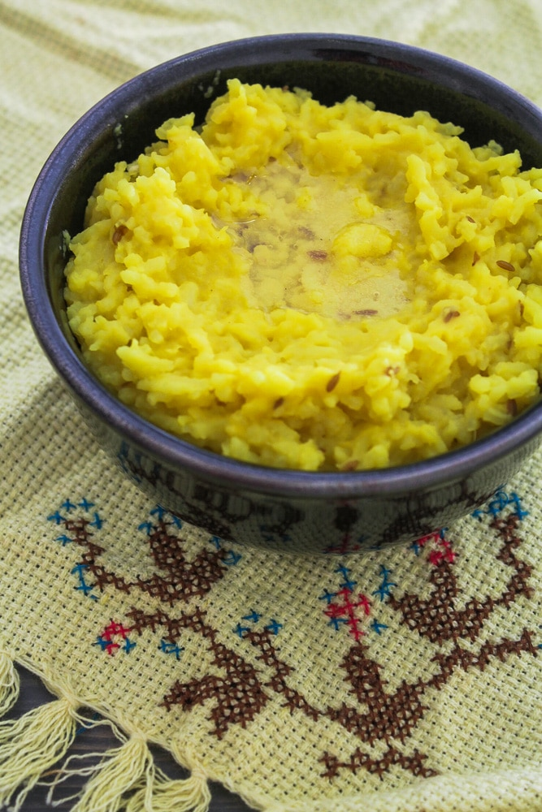

Khichdi
Home

Description
Khichdi is a dish made from rice and split and skinned green gram (bina chilke wali moong dal), it is quite delicious and usually served with ghee or butter on top of it
Ingredients
- Rice
- Split and Skinned Green Gram
- salt and turmeric powder
Steps
- Wash rice and split and skinned gram (more or less in equal proportions)thoroughly.
- Soak them into water for about 30-40 minutes
- after about 40 minutes rinse and wash them
-
put some water in cooker to heat it up(enough water so that the rice and gram can be soaked in it)
- then add Rice and Gram to it
- add some turmeric powder and salt to it
-
After a few whistles and some time Khichdi will be ready to served
- Serve it hot with some ghee or butter on top of it.
- milk can also be added when the dish is slight cooled down or hot as preferred.